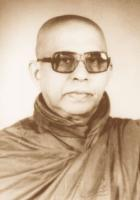

BuddhaSasana
Home
Page
This document is written in
Vietnamese, with Unicode Times font
Hòa thượng Piyadassi sinh năm 1914 tại Colombo, Tích Lan và theo học tại trường Cao đẳng Nalanda, và sau đó tiếp tục tại Ðại học Sri Lanka. Ngài xuất gia năm 20 tuổi (1934), và là đệ tử của Ðại lão tăng (Nayaka Thera) Pelene Vjirannyana, sáng lập viên tự viện Vajirarama tại Colombo. Ngài cũng từng là nghiên cứu sinh tại Trung tâm Nghiên cứu các Tôn giáo Thế giới, Ðại học Harvard, Hoa Kỳ.
Ngài là một vị Pháp sư lỗi lạc và uyên bác, đã từng thực hiện 14 chuyến du hành toàn cầu để hoằng dương đạo pháp. Trước năm 1975, Ngài đã từng sang thăm viếng Việt Nam nhiều lần, cùng với Ngài Hòa thượng Narada. Ngài cũng giúp sáng lập nhiều tổ chức nghiên cứu và xuất bản Phật Giáo tại Tích Lan, và quyển "Bảy Yếu tố Giác ngộ" (Thất Giác Chi - The Seven Factors of Enlightenment) là tập sách đầu tiên do hội Buddhist Publication Society xuất bản (Wheel Series, number 1). Quyển "Con Ðường Xưa của Ðức Phật" (The Buddha's Ancient Path) đã được xuất bản nhiều lần và được dịch ra nhiều thứ tiếng, và được xem như là một trong những quyển sách nhập môn về Ðạo Phật rõ ràng và nghiêm túc nhất. Ngoài ra, quyển "Phật Giáo Nhìn Toàn diện" (The Spectrum of Buddhism - Phạm Kim Khánh dịch Việt) cũng là một quyển sách rất được nhiều người tìm đọc.
Năm 1991, Ngài được Hội đồng Tăng già tôn vinh là Ðại Trưởng Lão (Nayaka Thera), lãnh đạo hệ phái Amarapura Nikaya của Tích Lan.
Ngài viên tịch ngày 18 tháng Tám, năm 1998, tại tự viện Vajirarama, Colombo.
revised: 27-08-2003